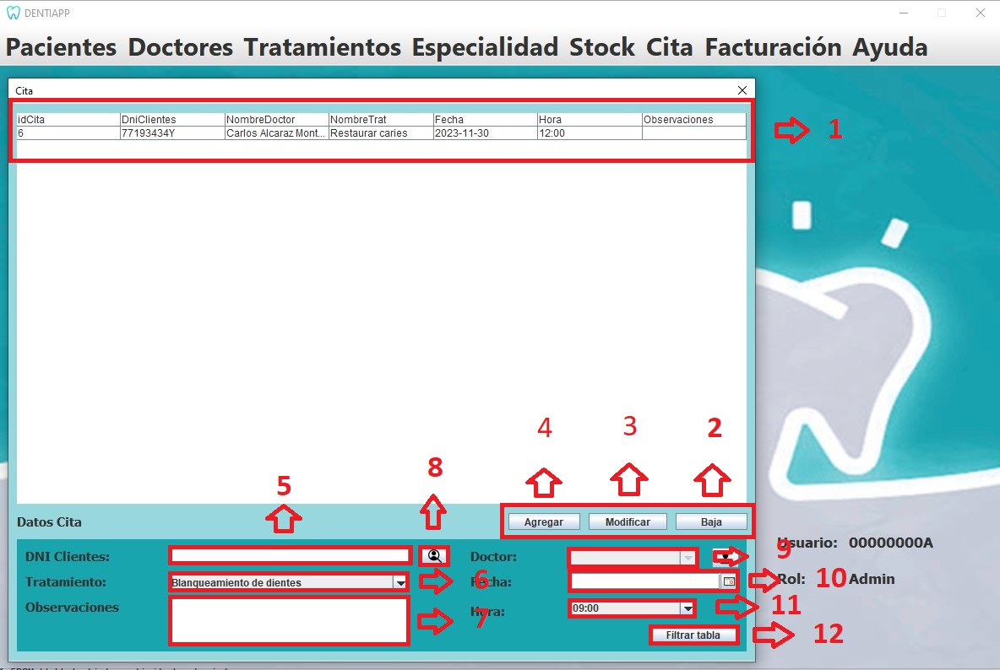

Esta es la página de Gestión de Citas. A ella tiene acceso el Doctor, quien podrá visualizarla e interactuar con ella.
En esta página, dicho usuario podrá ver la tabla de citas. Además, podrá
interactuar con la base de datos agregando nuevas Citas, eliminando las ya existentes o modificando los valores de estos.
También se podrá realizar una búsqueda específica de una Cita en concreto mediante el botón de filtrar tabla, asignar una hecha
y hora especifica a la cita.
A continuación, se mostrará el diseño de nuestra interfaz, señalizando y explicando la funcionalidad de los distintos
elementos destacables:

Listado de elementos:
-
Tabla:Está conectada a la base de datos "Cita", y nos permite visualizar el
contenido de esta. Presenta una funcionalidad especial al hacer doble click sobre una de sus filas, rellenando los cuadros
de texto de la parte inferior con el contenido de la Cita seleccionada.
-
Botón "Baja":Este botón nos permite eliminar una Cita de la tabla, realizando al mismo
tiempo una consulta DELETE sobre la tabla de la base de datos. Para eliminar una Cita, primero se deberá seleccionar
haciendo doble click sobre él en la tabla. Acto seguido, se pulsa este botón y la Cita se eliminará.
-
Botón "Modificar":Sirve para modificar los datos de una Cita de la base de datos
mediante una consulta UPDATE. Para ello, seleccionaremos dicha Cita haciendo doble click sobre él.
Después, usando los cuadros de texto en los que se posicionan los datos, cambiaremos la información a nuestro placer.
Por último, se pulsará sobre el botón y se habrá modificado la base de datos con éxito.
-
Botón "Agregar":Nos permitirá insertar una Cita en la base de datos de forma cómoda, realizando una consulta INSERT.
Simplemente se deben rellenar los datos en los cuadros de texto, pulsar el botón, y la nueva Cita se habrá
introducido satisfactoriamente en la base de datos.
-
Cuadro de texto "DNI Cliente": En él se mostrará o se escribirá el DNI del cliente con el que
queramos trabajar.
-
Menu desplegable "tratamiento": En él se mostrará un menu desplegable con los nombres los Tratamientos para seleccionar
con el que queramos trabajar.
-
Cuadro de texto "Obeservaciones": En él se mostrará o se escribirá las Observaciones que el medico quiera escribir
sobre la situación del paciente con el que queramos trabajar.
-
boton "Filtro DNI": Con este boton podremos realizar una busqueda de la tabla indicando el DNI del paciente con el que
queramos trabajar.
-
Menu desplegable "Doctor": En el se mostrara un menu desplegable con los nombres de los doctores que realizar el tratamiento de la cita
del paciente con el que queramos trabajar.
-
Menu desplegable "Fecha": En el se mostrara una ventana que se desplegara con los dias del meses en los que se mostrara
los dias disponibles del doctor para asignar la cita al paciente.
-
Menu desplegable "Hora": En el se mostrara una ventana que se desplegara con las horas del dia en los que se mostrara
las hora disponibles del dias indicado para que el doctor pueda asignar la cita al paciente.
-
Botón "Filtrar tabla":Este botón nos permitirá buscar una Cita en específico de la tabla, en
el caso de que queramos hacer una comprobación y nuestra tabla contenga muchos elementos. Para hacer uso de él, primero
pulsamos sobre él y se nos desplegará un cuadro de texto en el que tendremos que introducir la cita que queremos
buscar, escribiéndo el DNI del cliente como condición de búsqueda. Al darle a confirmar, la tabla se actualizará mostrando únicamente
la Cita cuyo DNI coincida con el introducido.